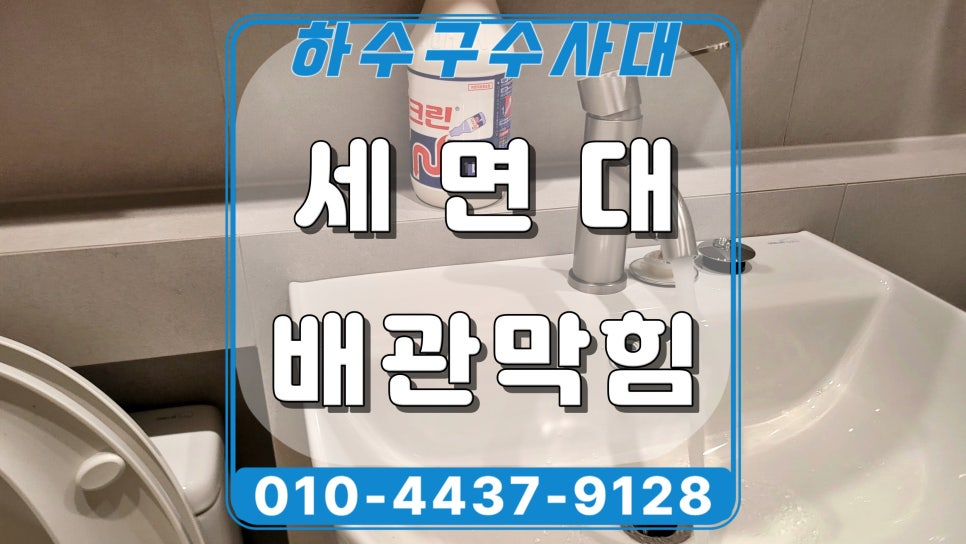
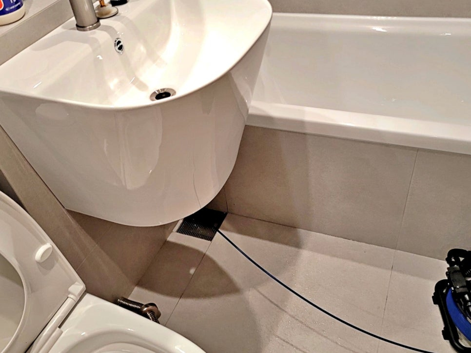
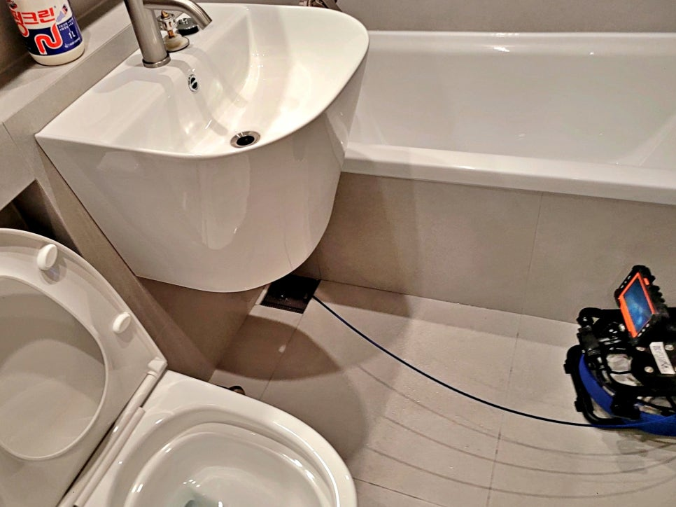
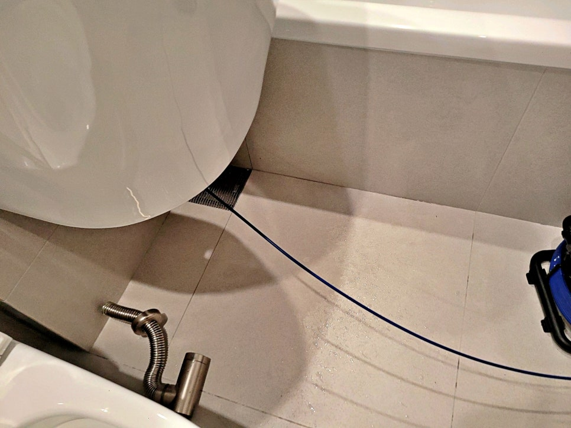
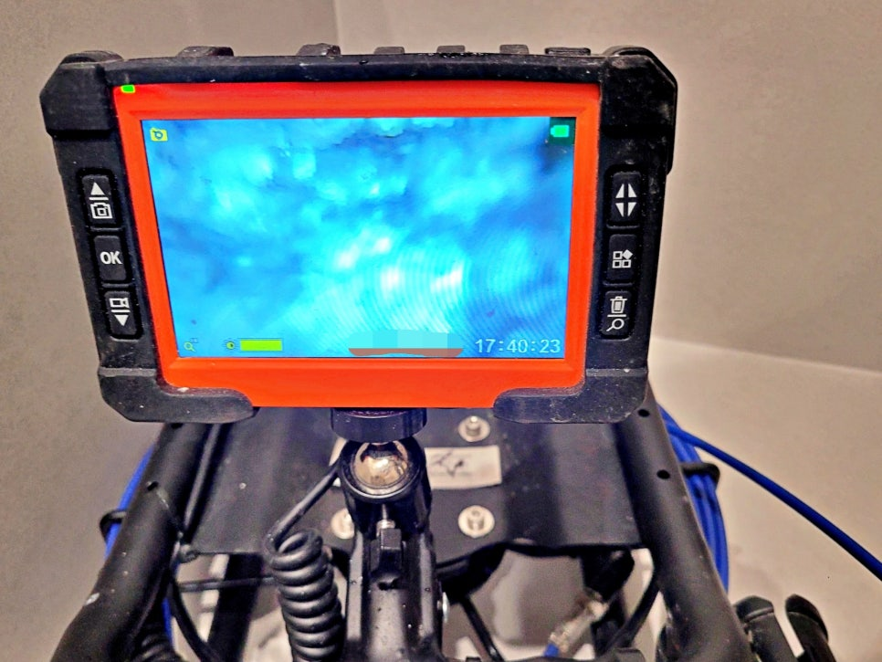
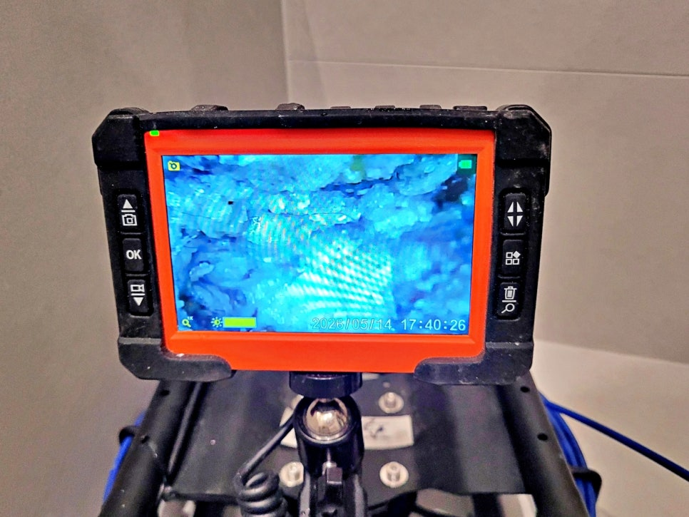
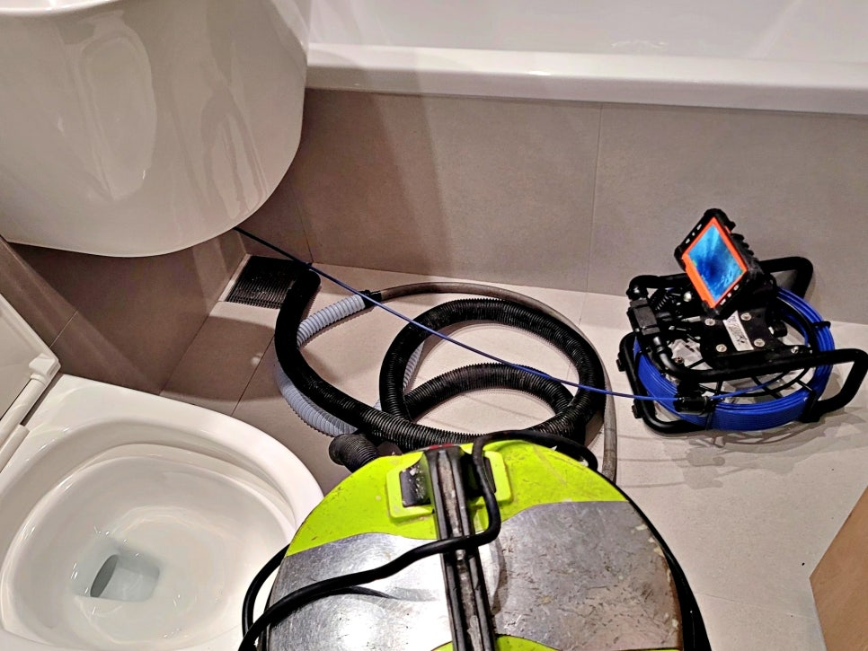

🏠 안산 고잔동 화장실 세면대막힘, 리모델링 공사 이물질이 원인
안산 하수구막힘 전문 시공 후기

📋 작업 개요
- 위치: 안산
- 서비스 유형: 하수구막힘, 배관막힘, 역류해결, 배관청소, 설비공사
- 작업 일시: 13시간 전
- 업체명: 하수구수사대 (010-5615-2118)
🔍 문제 상황
안산 고잔동 아파트 리모델링 공사 후
세면대역류 원인을 찾아 해결한 현장
안녕하세요.
안산 고잔동 세면대막힘 전문
하수구수사대입니다.
이번 현장은 아파트 화장실 세면대에서
물이 제대로 내려가지 않고
다시 차오르는 증상이 있다는 연락을
받고 출동한 사례인데요.
안산 고잔동 아파트 화장실 세면대 현장
일반적인 머리카락 막힘처럼
보일 수도 있지만, 현장 상황을 보면
조금 달랐습니다.
리모델링 공사가 진행된 뒤
화장실 세면대 배수가 불안정해졌고,
물을 사용하면 배수구 쪽에서
역류하는 증상이 나타났습니다.
안산 고잔동 화장실 세면대막힘 현장
세면대 아래 매립 배관 방향 점검
현장은 아파트 화장실이었고,
세면대가 벽 쪽에 붙어 있는
매립형 구조였습니다.
이런 구조는 하부 배관이
겉으로 길게 드러나 있지 않기 때문에
눈으로만 보고 막힌 위치를
바로 판단하기 어려운데요.
겉에서 보이는 부분만 분해한다고
바로 해결되는 상황은 아니었습니다.
그래서 먼저 세면대 주변 상태와
바닥 배수구 위치를 확인한 뒤,
벽 속으로 이어지는 구간을 중심으로
점검을 진행했습니다.
내시경으로 확인한 매립 배관 상태

🔎 원인 분석
💡 전문가 진단: 슬러지와 이물질이 통로를 꽉 막고 있어 배수가 불가능하며, 정밀 타격 및 배관 세척이 동반되어야 해결 가능합니다.
내시경 카메라로 배관 내부 확인
세면대 쪽으로 내시경 카메라를 넣어
내부 상태를 확인했습니다.
점검 결과, 배관 안쪽에는
물이 고여 있었고
여러 이물질이 함께 보였습니다.
배관 안 이물질 확인 중인 화면
단순 물때나 머리카락 정도가 아니라
플라스틱 조각처럼 보이는 긴 이물질과
공사 중 들어간 것으로 보이는 찌꺼기가
함께 쌓인 상태였습니다.
석션 장비와 내시경 장비를 함께 사용한 작업
리모델링 현장에서는
작업 중 작은 자재 조각이나
먼지, 마감 찌꺼기가 배수구 쪽으로
들어가는 경우가 있습니다.
세면대 배수구 주변 석션 작업 진행
처음에는 별문제 없어 보여도
좁은 구간에 걸리면
세면대 물이 느리게 빠지거나
다시 올라오는 증상으로 이어질 수 있습니다.
석션 장비로 물과 이물질을 함께 흡입
배관 내부에서 확인된 공사 이물질
이번 현장은 단순히 물만 빼는 작업이 아니라
안쪽에 걸린 이물질까지
함께 제거해야 하는 상황이었는데요.
석션 장비를 사용해
고여 있던 물과 내부 찌꺼기를
차례로 흡입했습니다.
다만 이런 작업은 장비만 넣는다고
끝나는 일이 아닙니다.
배관 구조를 먼저 보고
막힌 구간이 어디인지 확인한 다음,
흡입 압력을 무리하게 주지 않도록

🔧 작업 과정
상태를 보면서 진행해야 합니다.
석션 후 나온 플라스틱 조각과 찌꺼기
특히 매립형 세면대는
구조를 잘못 판단하면
작업 시간이 길어지거나
다른 구간에 부담이 갈 수 있습니다.
그래서 내시경 확인과 석션 작업을
같이 진행하면서
막힌 지점을 중심으로 정리했습니다.
석션 작업 후에는 배관 안에서
나온 이물질을 확인했습니다.
사진처럼 플라스틱 조각과
작은 공사 찌꺼기들이 섞여 있었고,
일부는 길게 걸릴 수 있는 형태였습니다.
작업 후 세면대 배수 테스트 진행
이런 이물질은 세면대 배수구 안에서
물 흐름을 막기 쉽습니다.
머리카락이나 비누 찌꺼기와 달리
자연스럽게 녹거나
흘러가기 어렵기 때문에
장비로 직접 제거해 주는 과정이
필요했습니다.
작업 후 세면대 배수 테스트
바닥 배수구 주변 추가 역류 여부 없음까지 확인
이물질을 제거한 뒤에는
세면대 물을 틀어
배수 상태를 다시 확인했습니다.
작업 전에는 물이 제대로 빠지지 않고
역류하던 상태였지만,
정리 후에는 세면대 물이
정상적으로 내려가는 것을 확인했습니다.
리모델링 현장 배관 관리요령
작업 구분
관리 포인트
공사 중
공사 중에는
세면대, 욕실 바닥 배수구 내부로
자재 조각이 들어가지 않도록
미리 막아두는 것이 좋습니다.
공사 후
공사 후에는
처음 물을 사용할 때
배수가 느리거나 꿀렁임이 있는지
확인하는 것이 좋습니다.
청소할 때
청소할 때는
공사 먼지나 시멘트 물, 본드 찌꺼기를
배수구로 흘려보내지 않는 편이 좋습니다.
증상이 있을 때
증상이 생겼을 때는
약품을 반복해서 붓기보다
내부 상태를 먼저 확인하는 것이 안전합니다.
안산 고잔동 화장실 세면대막힘 현장은


✅ 작업 완료
리모델링 공사 이후
배관 안에서 확인된 이물질이
세면대 배수를 방해한 사례였습니다.
겉으로 보기에는 단순 막힘처럼 보여도
매립형 구조에서는
내부 상태를 확인해야
정확한 작업 방향을 잡을 수 있습니다.
만약 세면대 물이 느리게 내려가거나
사용할 때마다 역류가 생긴다면
하수구수사대로 연락주셔서
정밀 점검을 받고 원인을 찾아
해결받으시기 바랍니다.
감사합니다.
#안산세면대막힘 #고잔동세면대막힘 #안산화장실막힘 #고잔동화장실막힘 #고잔동아파트세면대막힘 #고잔동세면대역류 #안산고잔동배관역류 #하수구수사대




⚠️ 하수구 배관 막힘 예방 및 관리 가이드
- ✅ 머리카락, 비닐, 물티슈 등 물에 분해되지 않는 이물질은 하수구 유입을 절대 금지해 주세요.
- ✅ 하수구 거름망을 씌우고 모여진 이물질은 주기적으로 쓰레기통에 바로 비워주셔야 합니다.
- ✅ 배관 노후가 심할 경우 이물질이 더 쉽게 걸리므로 주기적인 배관 세척(고압세척 등)을 권장합니다.
- ✅ 작업 후 1년 이내 재발 시 하수구수사대에서 무상 A/S 보증 서비스를 제공합니다.
💡 핵심 정리
- 확실한 장비 작업(내시경 점검 및 샤프트 스케일링)으로 원인을 뿌리 뽑습니다.
- 작업 후 1년 이내에 동일한 부위 재발 시 100% 무상 A/S 서비스를 보장합니다.
- 서울 · 경기 · 인천 전 지역에 24시간 언제든 긴급 출동할 수 있도록 항시 대기 중입니다.
❓ 자주 묻는 질문 (FAQ)
🚨 안산 하수구막힘 문제로 고민이신가요?
정확한 원인 진단과 확실한 시공으로 재발 없는 해결을 약속드립니다.
24시간 긴급 출동 | 서울 · 경기 · 인천 전지역 | 1년 내 재발 시 무상 A/S